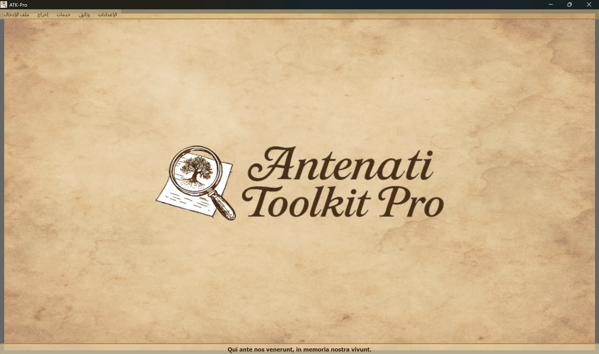

────────────────────────────────────────────────────────────────────────────────
Windows
ATK-Pro-Setup-vx.x.x.exe من صفحة الإصدار الرسميLinux
ATK-Pro-vx.x.x.deb (ديبيان/أوبونتو) أو .tar.gz من صفحة الإصدارsudo dpkg -i ATK-Pro-vx.x.x.deb أو نقر مزدوج في نوتيلوس/فايلز./ATK-Pro من الملف المستخرجmacOS
ATK-Pro-vx.x.x.dmg من صفحة الإصدارWindows
C:\Program Files\ATK-Pro\C:\Users\[TuoNome]\Documents\ATK-Pro\output\C:\Users\[TuoNome]\Documents\ATK-Pro\input\Linux
/opt/ATK-Pro/ (د) أو مطوّر مستخرج (طر - ز)~/Documents/ATK-Pro/output/~/Documents/ATK-Pro/input/macOS
/Applications/ATK-Pro.app~/Documents/ATK-Pro/output/~/Documents/ATK-Pro/input/────────────────────────────────────────────────────────────────────────────────
واللغات المتاحة هي:
ووفقاً للبيانات المتاحة في نهاية عام 2025، يقدر أنها قادرة على تغطية نحو 98 في المائة من المنحدرين من الإيطاليين والطوائف الإيطالية أو الإيطالية المتناثرة في جميع أنحاء العالم.
عندما تركض أولاً، البرنامج يخلق تلقائياً الملفات التالية:
C:\Users\[TuoNome]\Documents\ATK-Pro\output\C:\Users\[TuoNome]\Documents\ATK-Pro\output\doc\ (وثائق التقصير)C:\Users\[TuoNome]\Documents\ATK-Pro\output\reg\ (سجلات العجز)~/Documents/ATK-Pro/output/input\ analog (optional, for file input)في الوقت الذي يتم فيه تجهيز الملفات المؤقتة لتنزيلها (الملفات)tiles_canvas_X/و، عند الاقتضاء، الملفات المؤقتة لجيلها.
وتحذف جميع الملفات والملفات المؤقتة تلقائيا في نهاية التجهيز.
تبقى الملفات النهائية المعالجة فقط (الصور بالتنسيقات المختارة وملفات PDF والبيانات الوصفية).
لتغيير ملفات النواتج تستخدم مينو ستينغز وتخزن الخيارات وتعاد تلقائيا إلى الدورة المقبلة.
القيادة Settings s Resource Profile ينظم التوازي المستخدم أثناء التنزيل، وإعادة بناء الصور، وتوليد PDF:
ولا يغير الملف نوعية أو حقوق أو كمية الوثائق التي يتم الحصول عليها. ولا تزال الحدود الحكيمة المحددة للبوابة لها الأسبقية.
────────────────────────────────────────────────────────────────────────────────
تتميز النافذة الرئيسية لـ Antenati Toolkit Pro ببنية بسيطة وبديهية.

والشعار اللاتيني " كوي آنت نوفس " ، إحياء لذكرى منا، يشير إلى أهمية الجذور والذاكرة الجماعية.
في أعلى النافذة تحت الرأس
[مدخل الملف] [الناتج] [Services] [الصدور] [الجلسات]
وتتضمن كل قائمة أزرار وخيارات محددة (انظر الفرع التالي).
إدارة تحميل سجلات IIIF:
├─ Esempio input
│ └─ Visualizza il file di esempio (mostra formato coppie: modalità D/R + URL)
├─ Apri input
│ └─ Seleziona un file .txt con i tuoi record IIIF
│ (Deve contenere coppie: modalità D/R su riga 1, URL su riga 2)
└─ Modifica input
└─ Modifica il file input attualmente caricato
(Aggiungi/rimuovi record, cambia URL, salva modifiche)
تجهيز الطلبات والناتج:
├─ Elabora │ └─ Avvia il download, la ricostruzione e il salvataggio delle immagini │ (Mostra finestra di progresso in tempo reale) ├─ Apri cartella output │ └─ Apre in Esplora Risorse la cartella con i file elaborati └─ Visualizza elaborazioni precedenti └─ Lista dei record già elaborati
قائمة الخدمات المتكاملة:
├─ Ricerca assistita AI │ └─ Suggerisce portali, piste di ricerca e query genealogiche da verificare ├─ Visualizzazione Immagini │ └─ Viewer immagini scaricate e/o PDF generati ├─ Visualizzazione Metadati JSON │ └─ JSON originali e metadati (genealogici, tecnici, EXIF) ├─ OCR Avanzato │ └─ Testi manoscritti ottocenteschi, latino ecclesiastico, tardo-medievali ├─ Traduzione OCR │ └─ Traduzione automatica testi estratti nelle lingue selezionate └─ Esportazione GEDCOM └─ GEDCOM, Gramps, Family Tree Maker, Ancestry, MyHeritage, WikiTree, etc.
الحصول على الموارد والوثائق:
├─ Disclaimer - Clausole legali e termini d'uso ├─ Presentazione autore - Background dell'autore del progetto ├─ Presentazione progetto - Storia, motivazioni, roadmap di ATK-Pro ├─ Guida - Indice principale della guida modulare └─ Informazioni - Versione, copyright, email di contatto
التشكيل العام للبرنامج:
├─ Cambia lingua
│ └─ Seleziona la lingua dell'interfaccia (richiede riavvio)
├─ Seleziona formati immagine
│ └─ Scegli tra PNG, JPG, TIFF e PDF (almeno 1 obbligatorio)
│ PDF può essere selezionato da solo o insieme ai formati immagine
│ La scelta viene memorizzata e pre-selezionata automaticamente alla sessione successiva
├─ Seleziona cartelle output
│ └─ Apre prima la scelta della modalità cartelle, poi le finestre di selezione:
│ • Cartella unica per tutti → una sola cartella per documenti e registri
│ • Cartelle separate doc/reg → una cartella per tutti i doc, una per tutti i reg
│ • Cartella per ogni record → una cartella distinta per ciascun record
│ La modalità e le cartelle vengono memorizzate e ripristinate alla sessione successiva
├─ Esporta configurazione
│ └─ Salva le impostazioni attuali in un file
├─ Importa configurazione
│ └─ Carica un file di impostazioni precedentemente salvato (ripristina tutte le preferenze e percorsi)
├─ Verifica aggiornamenti
│ └─ Controlla la disponibilità di nuove versioni del programma
└─ Chiudi
└─ Termina il programma (mostra banner di supporto PayPal.me)
────────────────────────────────────────────────────────────────────────────────
ATK-Pro is available in 20 languages:
ويمكن تغيير اللغة في أي وقت عن طريق مينو ستينغز تغيير اللغة.
البرنامج يتطلب إعادة تشغيل لتطبيق اللغة الجديدة
وعند إعادة التشغيل، يقوم البرنامج تلقائياً بتحميل اللغة المختارة الجديدة.
يترجم تغيير اللغة:
إذا تم إيقاف النموذج الافتراضي أو لم يعد متاحًا، يستعلم ATK-Pro عن الفهرس المتاح لبيانات الاعتماد، ويختار نموذجًا عامًا متوافقًا مع الوظيفة ومع الصور عند الحاجة، ثم يجرّب ما يصل إلى ثلاثة بدائل. لا يتم تفعيل الرجوع التلقائي عند أخطاء الحصة أو الشبكة أو المصادقة.
تجاوز النموذج: يظل النموذج المُدخل يدويًا ملزمًا ولا يتم استبداله تلقائيًا مطلقًا.